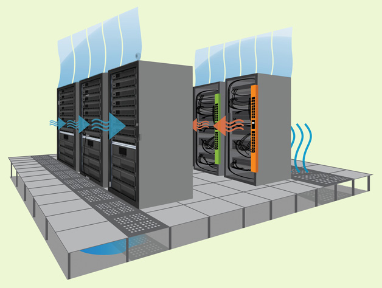

In the near future, the web giants will continue to grow. The "International Data Company" stated that public IT cloud services revenue reached $100 billion in 2016, and predicted it would exceed $200 billion in 2020 - seven times the overall rate of the rest of the IT market!

You may be supprised to find out that this may be good news for the environment. Datacenters will run a virtual machine far more efficiently than your business ever could. This is due to a multitude of reasons including; better infrastructure, higher utilization rate and slower hardware refresh speed.
Datacenters are located closer to the facilities that power them to prevent large losses during the process of transmitting electricity over long distances. Furthermore, cloud computing data centres use less wattage to provide backup power and cooling for their data centres due to superior hardware setup.
Amazon estimates customers reduce their server’s carbon emissions by 88% by moving their infrastructure to the cloud!
Servers are arranged in columns to ensure they are efficiently cooled. Every row between each rows of servers will be cooled while they will exhaust hot air in every other column.